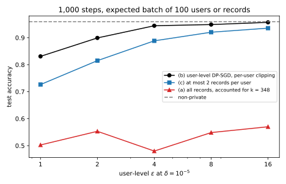

42 User-level differential privacy
42.1 Why this matters
Every differential privacy (DP) guarantee in this part so far protects one record. Stochastic gradient descent (SGD) with per-example clipping and Gaussian noise, DP-SGD, reports \(\varepsilon = 6.71\) at \(\delta = 10^{-5}\) for the part’s running example, and that number says an adversary who sees the model learns little about whether any single training example was used. But people do not contribute one record each. A user of a messaging app writes hundreds of messages, a patient has dozens of visits, a photographer uploads thousands of photos. Each record is protected; the person behind all of them is not, because what an adversary learns from all of a person’s records together can be far more than what they learn from one.
The one idea: the neighbouring relation is the privacy unit. DP compares outputs on two datasets that differ in one unit, and whatever differs between them is what is protected. If neighbours differ in one record, records are protected; if they differ in all of one person’s records, people are. Nothing else in the definition changes. So there are two ways to protect a person. You can keep the record as the unit and pay for the person afterwards, which is cheap to build and expensive in privacy. Or you can make the person the unit from the start: sample people, bound each person’s total contribution, and run the usual accountant with people in place of records. On the running example the first route gives a useless model at any reasonable budget, and the second a model within a few points of the non-private one.
42.2 The privacy unit
A mechanism is user-level \((\varepsilon, \delta)\)-DP if the definition of DP holds for every pair of datasets that differ by adding or removing all the records of one user; it is example-level DP if it holds for datasets that differ in one record. User-level DP is not a new privacy notion, only a coarser neighbouring relation, so post-processing, composition and every accountant of Part 4 hold for it unchanged. What changes is the sensitivity: how far one unit can move the computation. Records, users, households, devices and organizations are all possible units, and the right one answers the question “whose participation do I want to hide?” A guarantee that does not name its unit leaves that question open.
What does an example-level guarantee promise a person with \(k\) records? Adding that person’s records one at a time walks from one dataset to the other in \(k\) example-level steps. Group privacy applies the one-record guarantee at each step (Post-processing, group privacy and composition): each step multiplies the probability bound by \(e^\varepsilon\), so the person gets \(k\varepsilon\), and each step’s slack \(\delta\) is multiplied by the \(e^\varepsilon\) of every later step, \[\delta_k = \delta\,\frac{e^{k\varepsilon} - 1}{e^\varepsilon - 1}. \tag{42.1}\] Some mechanisms attain this bound, so nothing better holds for a mechanism known only to be \((\varepsilon, \delta)\)-DP. The \(\varepsilon\) part is linear in \(k\), already weak: at \(\varepsilon = 1\) per record, a person with 10 records gets \(\varepsilon = 10\). The \(\delta\) part is worse, because it grows exponentially in \(k\varepsilon\).
Read naively, the running example’s \((6.71, 10^{-5})\) gives a user with two records \(\varepsilon = 13.42\) and \(\delta_2 = 10^{-5}(1 + e^{6.71}) = 0.0082\): a chance of almost one in a hundred that the guarantee fails outright, which is no guarantee. You can do better for DP-SGD, because its accountant converts to \((\varepsilon, \delta)\) at any \(\delta\): pick the per-record \(\delta\) that makes \(\delta_2 = 10^{-5}\) exactly. That gives a per-record \(\varepsilon\) of 9.30 and a user-level \((18.61, 10^{-5})\). For five records the same procedure gives a user-level \(\varepsilon\) of 118.12. For ten it gives nothing at all. Shrinking the per-record \(\delta\) raises the per-record \(\varepsilon\), and \(\delta_k\) is a race between a falling \(\delta\) and a rising \(e^{(k-1)\varepsilon}\); beyond a few records the rising term wins at every \(\delta\), and no choice brings \(\delta_{10}\) down to \(10^{-5}\). In the running example’s population of 1,000 users, 244 have at least ten records.
42.3 What a record-level model gives a heavy user
Group privacy treats DP-SGD as a black box, and it is not one: you know exactly how a user’s records enter each step. Recall that DP-SGD draws each record into the batch independently with probability \(q\) (Poisson sampling), clips each record’s gradient to norm \(C\), sums them and adds Gaussian noise of standard deviation \(\sigma C\), where \(\sigma\) is the noise multiplier. A user with \(k\) records therefore has a random number of them in each batch, between 0 and \(k\), binomially distributed, and the worst case is that all the drawn ones push the sum by the full \(C\) in the same direction. So, in units of \(C\), one step compares the noise alone, \(\mathcal N(0, \sigma^2)\), with a mixture of Gaussians shifted by \(m = 0, 1, \dots, k\), each weighted by the probability that \(m\) of the user’s records were drawn. Charles et al. (2024, Theorem 3) prove that this pair, composed over the steps, bounds the user’s privacy loss, and that some loss function, one that aligns the user’s gradients, attains it. An accountant built on the pair computes the user’s guarantee directly, the same way the subsampling accountant does for one record.
The result has a simple reading while \(kq\) is small: a user with \(k\) records looks like one record sampled at rate \(kq\). Amplification by subsampling works because the unit is usually absent from the batch, and what matters is the probability that some record of the user is present, about \(kq\). Halving the sampling rate exactly compensates doubling the user’s records. So the quick estimate is to rerun the record-level accountant with \(q\) replaced by \(kq\). It errs on the low side, because it drops the steps in which several of the user’s records are drawn together, and those steps shift the sum by several clipping norms at once, a mechanism with noise multiplier \(\sigma/m\) whose tail no amount of rarity can hide at high orders.
Table 42.1 applies the accountant to the running example’s DP-SGD run, \(q = 0.01\), \(\sigma = 1\), 10,000 steps, \(\delta = 10^{-5}\).
| Records of the user \(k\) | 1 | 2 | 5 | 10 | 50 |
|---|---|---|---|---|---|
| User accountant | 6.72 | 15.54 | 52.36 | 146.20 | 2161.43 |
| Group privacy | 6.71 | 18.61 | 118.12 | none | none |
| One record at rate \(kq\) | 6.71 | 15.32 | 50.11 | 134.50 | 1673.08 |
Already at two records the person is protected at \(\varepsilon = 15.54\), more than twice the record’s 6.71; at ten, 146.20 means no protection at all. The direct accountant beats group privacy for every user with more than one record and stays finite where group privacy gives up (Figure 42.1). The rate-\(kq\) estimate is within 1.5% at two records and 8% at ten, and below the accountant in every row. One more point matters for an auditor: the accountant is a worst case over gradients, not a pessimistic estimate. Real users’ gradients are partly aligned, which is exactly why their records are correlated, and the theorem says some loss attains the bound, so treat it as the guarantee.

42.4 User-level DP-SGD
Accounting for users after the fact charges a heavy user for every one of their records. The alternative, due to McMahan, Ramage, Talwar & Zhang (2018), who used it for federated learning of a language model, changes what DP-SGD samples and clips. At each step, put each user in the batch independently with probability \(q\). For each sampled user, compute one vector from that user’s records alone, for example their average gradient, or the change in weights after a few local SGD steps on their data. Clip that vector to norm \(C\), sum over the sampled users, add Gaussian noise of standard deviation \(\sigma C\), and divide by the expected number of sampled users, \(qU\) for \(U\) users.
The guarantee follows because each property the DP-SGD proof used still holds with users in place of records. Adding a user adds one clipped vector to the sum and changes no other, so one user moves the sum by at most \(C\) however many records they have. The user is in the batch with probability \(q\), independently of the others, so each step is the same subsampled Gaussian mechanism as before. The result is user-level DP with exactly the accountant of example-level DP-SGD, with \(q\) now the user sampling rate.
Two consequences follow, one bad and one good. The bad one: you pay for the number of units. There are fewer people than records, so to keep the same expected batch you must sample at a higher rate, and amplification is weaker. On the running example, with 1,000 steps and an expected batch of 100 units, a record-level \(\varepsilon = 4\) needs \(\sigma = 0.778\) at \(q = 0.01\), while a user-level \(\varepsilon = 4\) needs \(\sigma = 3.78\) at \(q = 0.1\). The noise on the averaged update is about five times larger, 0.0189 against 0.00389. That is the honest price of protecting people: there are ten times fewer of them than records, and DP’s cost per unit is fixed. The good one: records inside a user are free. The guarantee does not depend on how many records a user has, so they can be averaged, used for several local steps or subsampled without changing \(\varepsilon\). More records make each user’s vector a better estimate of their gradient, so the signal improves while the noise stays put.
A common variant keeps per-record clipping: keep at most \(k\) records per user, clip each to \(C\), and sum them, with users still sampled whole. One user then moves the sum by up to \(kC\), and the guarantee is that of noise multiplier \(\sigma/k\), a factor \(k\) in noise that averaging before clipping avoids. Summing all of a user’s records and then clipping the sum is also valid, with sensitivity \(C\).
The proof assumes two things that implementations can break. Each user’s vector must be computed from that user’s data alone, which rules out normalizing across users and requires that one person is not spread over several “users”; if one person has several accounts, the unit is the account and the person is again a group. And users must be Poisson-sampled; iterating over users in a fixed shuffled order is a different mechanism, exactly as for records.
42.5 Contribution bounding
User-level DP-SGD needs a pipeline that groups records by user and computes one vector per user. Many pipelines are built around records instead: shuffled files of examples, per-example gradient code, fixed-length batches. You can keep such a pipeline and still protect users with contribution bounding: keep at most \(k\) records of each user, chosen without looking at other users’ data (for example at random), discard the rest, and run example-level DP-SGD on what remains. Adding a user then adds at most \(k\) records, all theirs, so the user accountant of Section 42.3 with \(k\) records gives the user-level guarantee. The selection must look only at the user’s own records; a rule that kept, say, the records most similar to the rest of the dataset could change which records other users keep when one user is added.
The cap is a bias–variance trade-off (Amin, Kulesza, Muñoz Medina & Vassilvitskii 2019). A larger cap keeps more data but, since the user looks like a record sampled at rate \(kq\), it needs noise growing roughly in proportion to \(k\) at a fixed sampling rate. A smaller cap needs less noise but throws away data, all of it from heavy users, so what remains is both smaller and reweighted toward light users. Table 42.2 shows the trade-off at a user-level \(\varepsilon = 4\) on the running example, with 1,000 steps and an expected batch of 100 records.
| Cap \(k\) | Records kept | Noise multiplier \(\sigma\) | Test accuracy |
|---|---|---|---|
| 1 | 1,000 (10.0%) | 3.78 | 0.8917 |
| 2 | 1,807 (18.1%) | 4.18 | 0.8920 |
| 5 | 3,506 (35.1%) | 5.34 | 0.8790 |
| 10 | 5,063 (50.6%) | 7.34 | 0.8276 |
| 20 | 6,631 (66.3%) | 11.2 | 0.7562 |
| 50 | 8,437 (84.4%) | 21.8 | 0.6401 |
Raising the cap from 1 to 50 multiplies the data by 8.4 and the noise multiplier by 5.8, and accuracy falls from 0.8917 to 0.6401. On this task the noise dominates: one record per user already holds most of what the network can learn privately at this budget, and every extra record costs more in noise than it adds in signal. Caps 1 and 2 are tied. Two cautions follow. The best cap depends on the distribution of user sizes, so it should come from public knowledge of the population or be chosen privately; trying several caps and keeping the best test accuracy, as this table does to show the trade-off, spends privacy that the accountant does not see (Hyperparameter tuning). And the two techniques combine: cap records to bound compute, then compute one clipped vector per user, so the cap costs data but no longer noise.
42.6 Heavy users and the objective
User sizes are rarely equal. In the running example’s population the mean user has 10 records, the median 4, and the largest 348; the 30 users with at least 50 records hold 30.6% of all records (Figure 42.2).

Example-level training gives each user a weight proportional to their records, so those 30 users carry 30.6% of the expected update. User-level DP-SGD with averaged, clipped vectors gives each user at most \(1/U\), because each clipped vector is at most \(C\) long and the sum is divided by the number of users; the same 30 users carry at most 3.0%. So user-level training changes the objective, not only the noise: it minimizes roughly the average over users of each user’s average loss, not the average over records. Whether that is what you want depends on the application. For a keyboard model, weighting people equally keeps a few very active users from defining everyone’s suggestions. For a model meant to fit the overall distribution of records, it under-weights heavy users’ content, which matters when heavy users differ from light ones in language, topic or device. Summing a user’s gradients before clipping sits in between: it weights records until a user’s sum reaches \(C\), and users beyond that.
On the running example the reweighting costs nothing measurable. At user-level \(\varepsilon = 4\), user-level DP-SGD reaches 0.9361 on test points whose nearest training record belongs to a heavy user and 0.9319 on the others, against 0.9607 and 0.9622 for the non-private model. That is because one teacher network labels every record, so light users’ records teach the same function. On data where heavy users follow their own patterns, the same reweighting would cost accuracy on those patterns, and clipping adds to it: a heavy user whose data are unusual has a long average gradient, which is clipped to the same \(C\) as everyone else’s, the user-level version of what clipping does to small groups in Disparate impact.
42.7 Choosing a strategy
Three ways to train the running example with a user-level guarantee are now on the table: (a) example-level DP-SGD on all records, accounted for the heaviest user, \(k = 348\); (b) user-level DP-SGD; (c) a cap of two records per user, then example-level DP-SGD. Table 42.3 gives each one’s noise multiplier and test accuracy at the same user-level budget, with 1,000 steps and an expected batch of 100 units, one run each.
| User-level \(\varepsilon\) | (a) All records: \(\sigma\) | accuracy | (b) User-level DP-SGD: \(\sigma\) | accuracy | (c) Cap of 2: \(\sigma\) | accuracy |
|---|---|---|---|---|---|---|
| 1 | 449 | 0.5318 | 12.9 | 0.8065 | 14.4 | 0.7084 |
| 2 | 237 | 0.5582 | 6.89 | 0.9028 | 7.62 | 0.8374 |
| 4 | 128 | 0.5713 | 3.78 | 0.9347 | 4.18 | 0.8810 |
| 8 | 70.3 | 0.5478 | 2.18 | 0.9442 | 2.4 | 0.9333 |
Keeping the record as the unit fails: strategy (a) stays near chance at every budget up to \(\varepsilon = 8\). The heaviest user has on average \(348 \times 0.01 = 3.48\) records in every batch, so subsampling hardly hides them, and the noise must cover a shift of several clipping norms in nearly every step, which takes \(\sigma\) in the hundreds and drowns every gradient. Removing that user would not help much either, since the next-largest has 258 records.
Changing the unit wins. User-level DP-SGD is the best strategy at every budget, 0.9347 at \(\varepsilon = 4\) against 0.9612 non-private, with its largest advantage at small budgets: 9.8 points ahead of the cap at \(\varepsilon = 1\), 1.1 points at \(\varepsilon = 8\). It needs a little less noise than the cap and, unlike the cap, uses every record through the per-user average. Its cost is compute: each step processes all the records of about 100 users, about 1,000 records, ten times what the record-based strategies process. Bounding is the fallback when the pipeline must stay record-based; it comes close at \(\varepsilon = 8\), where the discarded data, not the noise, limits accuracy. Single runs vary by about a point at these budgets, so read the large gaps, not the small ones (Figure 42.3).

Published comparisons on language models, with different data, models and accountants, point the same way. Chua et al. (2024) find that user-level DP-SGD with per-user averaging generally beats contribution bounding, especially at small budgets, though they account for the cap with generic group privacy, which costs them more noise than the direct accountant would. Charles et al. (2024) report that sampling users usually does better when each user’s data are varied and when strong privacy is required, and that sampling examples sometimes wins.
At \(\varepsilon = 4\) the user-level model is 2.7 points below the non-private one (0.9347 against 0.9612). The record-level model of DP-SGD at the same \(\varepsilon\), trained for 10,000 steps, reached 0.9548; the difference is the price of the unit, and the user-level model protects 1,000 people instead of 10,000 records, including the person with 348 records as well as the one with a single record.
42.8 Code
The full edition’s script builds the user population, implements the user accountant by numerical integration and checks it against exact formulas, compares it with group privacy, and trains the three strategies with the part’s network. It takes about a minute and a half:
uv run python code/part05-dp-ml/user_level.py42.9 Cheat sheet
| Result | Formula or rule | Conditions |
|---|---|---|
| Group privacy | \((k\varepsilon,\ \delta(e^{k\varepsilon} - 1)/(e^\varepsilon - 1))\) | Any example-level \((\varepsilon, \delta)\) mechanism; can give no guarantee for DP-SGD beyond a few records |
| User with \(k\) records, example-level DP-SGD | Noise alone against a mixture of shifts \(0, \dots, k\) with binomial weights | Tight (Charles et al. 2024, Theorem 3) |
| Quick estimate | Record-level accountant at rate \(kq\) | Small \(kq\); slightly optimistic |
| User-level DP-SGD | DP-SGD’s accountant with users as units, \(q\) the user sampling rate | One clipped vector per user, from that user’s data alone; users Poisson-sampled |
| Capped sum per user | Noise multiplier \(\sigma/k\) | Per-record clipping, at most \(k\) records, users sampled whole |
| Contribution bounding | User accountant for \(k\) records | Records kept per user without looking at other users; cap chosen from public knowledge |
| Weight of a user | At most \(1/U\) (user-level), \(n_u/n\) (example-level) | Averaged, clipped per-user vectors |
| Running example | 6.71 per record; 15.54 for a user with 2 records, 146.20 with 10 | \(q = 0.01\), \(\sigma = 1\), 10,000 steps |
Name the privacy unit with every \(\varepsilon\); a record-level number says little about a person with many records. Prefer user-level DP-SGD with per-user averaging, which pays for the number of people rather than their records and uses all their data, and decide deliberately how heavy users should count.
42.10 Further reading
- McMahan, Ramage, Talwar & Zhang, “Learning Differentially Private Recurrent Language Models” (ICLR 2018): user-level DP-SGD in federated learning, the algorithm of Section 42.4.
- Charles, Ganesh, McKenna, McMahan, Mitchell, Pillutla & Rush, “Fine-Tuning Large Language Models with User-Level Differential Privacy” (arXiv 2407.07737, 2024): the tight accountant for a user under example-level sampling, and an empirical comparison of sampling examples against sampling users.
- Chua, Ghazi, Huang, Kamath, Kumar, Liu, Manurangsi, Sinha & Zhang, “Mind the Privacy Unit! User-Level Differential Privacy for Language Model Fine-Tuning” (Conference on Language Modeling 2024): contribution bounding against user-wise DP-SGD, with rules for which records to keep.
- Amin, Kulesza, Muñoz Medina & Vassilvitskii, “Bounding User Contributions: A Bias-Variance Trade-off in Differential Privacy” (ICML 2019): how to think about the cap, and how the best one depends on the distribution of user sizes.
Derivations. Every result in this chapter is derived step by step in the full edition’s chapter.